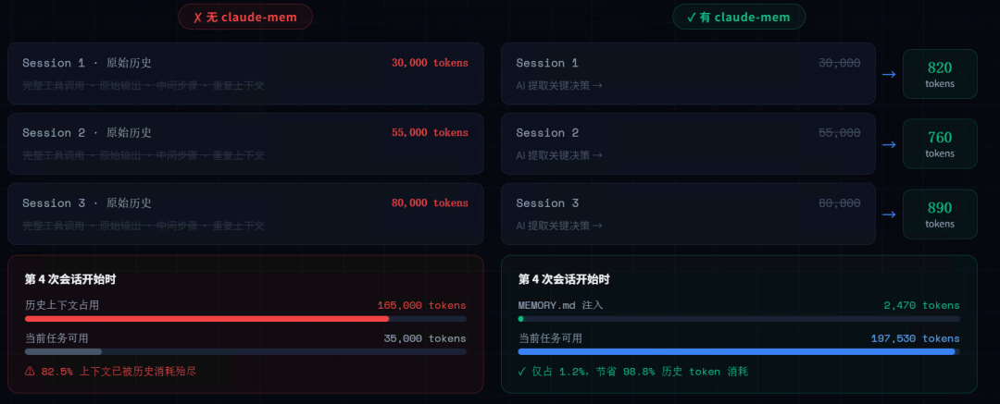
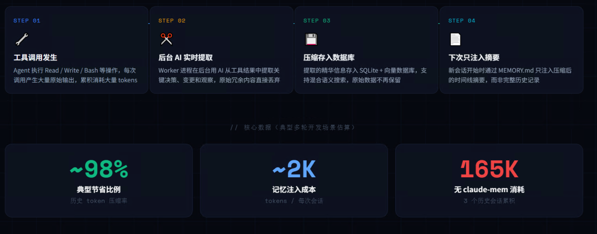
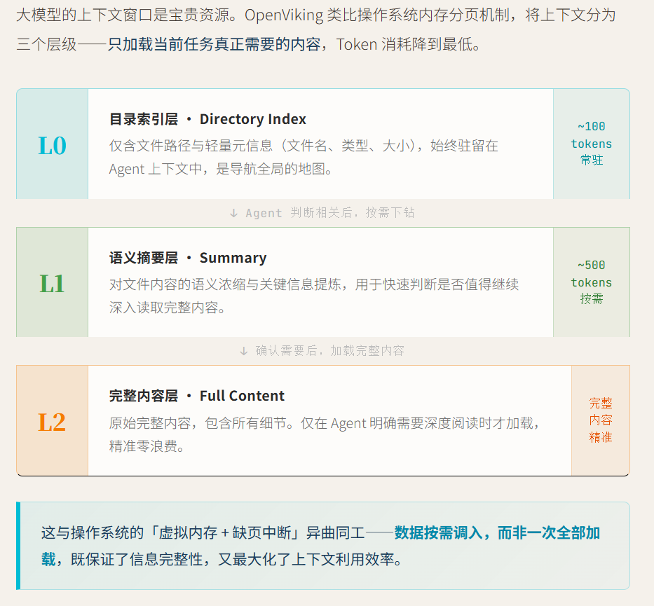
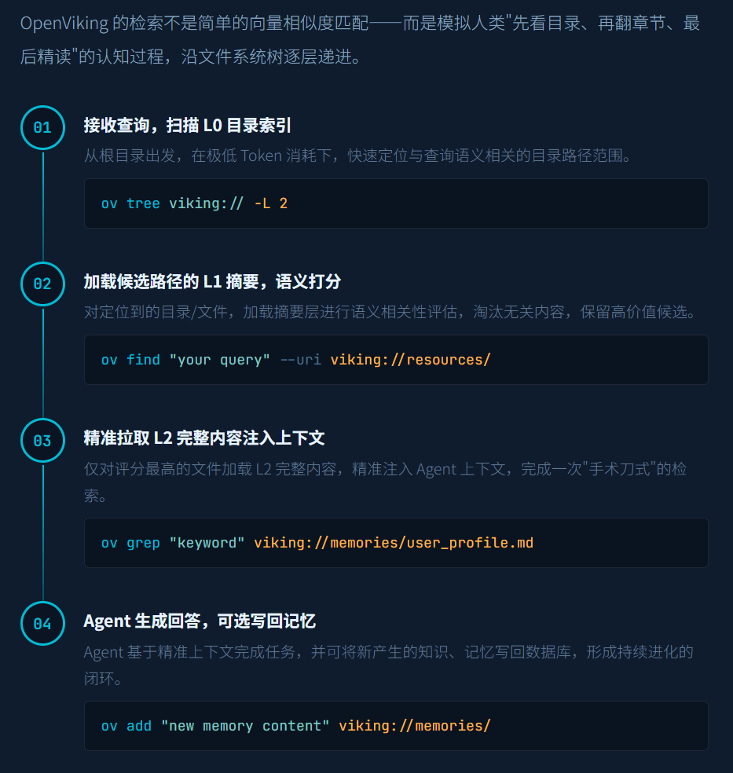

最近在后台，收到了上百条关于 OpenClaw 的吐槽。
一个是Token 消耗如同开闸放水。为了让 AI 不跑偏，我们不得不每次把长篇大段的历史对话、项目背景、需求细节重新塞进提示词，一趟流程下来，API 账单数字肉眼可见地飙升，很多人直呼 “用不起了”。
另一个是无可救药的 “金鱼记忆”。受限于上下文窗口的物理限制，多轮对话后，AI 转头就忘了你十分钟前定的核心规则、反复强调的需求边界，频繁出现前后矛盾、反复横跳的降智操作，最后还要你手动擦屁股。
今天就给大家带来两款堪称 “外挂级” 的开源解决方案：claude-mem和OpenViking。它们不仅能给你的 AI 装上 “永不失忆的大脑”，还能大幅砍掉 Token 成本，让你的 AI 真正从 “聊天机器人” 进化为能扛长周期任务的生产力工具。
神器1：claude-mem — 轻量级记忆插件，一键省 90% Token
如果你正被 OpenClaw 的健忘和高额 Token 账单折磨，claude-mem就是你的首选急救包。这是一款专为 Claude Code 和 OpenClaw 设计的持久化记忆插件，主打轻量开箱即用，不用复杂配置就能解决核心痛点。
它最核心的优势，就是彻底抛弃了 “把所有历史记录一股脑塞进提示词” 的烧钱逻辑，用一套成熟的机制实现了 “记忆按需调取”。
1.三层渐进式检索，Token 消耗直降 90%
它采用了「索引检索 - 时间线定位 - 详情调取」的三层工作流，先通过轻量级索引快速匹配相关记忆，再按需调取完整内容，而不是每次都全量加载历史记录。实测下来，常规使用场景下能帮你节省约 90% 的 Token 消耗，从根源上控制 API 账单。
2.可视化记忆流，AI 记了什么一目了然
插件自带本地 Web 可视化界面，你可以像刷朋友圈一样，实时查看 AI 沉淀的所有记忆卡片，包括每一次的工具调用、关键决策、Bug 修复记录、需求变更细节，彻底告别 “AI 到底记没记住” 的黑盒焦虑。
3.全自动运行，零手动干预
安装完成后，插件会通过生命周期钩子，自动捕捉对话中的关键信息、生成语义摘要、存入本地数据库，新会话开启时自动注入相关上下文，全程不用你手动写提示词、做归档。
4.全场景隐私与配置可控
支持用<private>标签排除敏感内容，同时可以细粒度控制记忆的注入规则、存储路径、AI 模型配置，数据全部存在本地，完全不用担心隐私泄露。


一键安装与配置
这款插件的安装极度友好，官方提供了全自动安装脚本，一条命令就能完成依赖检查、插件安装、配置、服务启动全流程：
curl -fsSL https://install.cmem.ai/openclaw.sh | bash如果需要自定义配置，也可以通过参数快速指定，比如指定 AI 提供商、无交互安装、升级版本：
# 指定AI提供商为Gemini并传入API Keycurl -fsSL https://install.cmem.ai/openclaw.sh | bash -s -- --provider=gemini --api-key=YOUR_KEY# 全自动无交互安装（默认适配Claude Max订阅）curl -fsSL https://install.cmem.ai/openclaw.sh | bash -s -- --non-interactive# 升级现有安装curl -fsSL https://install.cmem.ai/openclaw.sh | bash -s -- --upgrade
安装完成后，你可以在 OpenClaw 的配置文件中，自定义项目隔离、实时推送、端口等核心配置，适配自己的使用习惯。
快速上手使用
1.安装完成后，插件会自动启动 Worker 服务，默认端口为 37777；
2.浏览器打开 http://localhost:37777，即可进入可视化记忆界面，查看 AI 沉淀的所有记忆卡片与时间线；
3.在 OpenClaw 对话中，可直接通过 /claude_mem_status 检查服务状态，/claude_mem_feed 控制实时观察流的开关；
4.后续所有新对话，系统都会自动调取相关历史记忆，无需手动干预，即可实现跨会话上下文持久化。
神器 2：OpenViking — 企业级上下文数据库，任务完成率暴涨 49%
如果你有多个 AI Agent 协同工作，或是需要处理超复杂的长周期项目，那么火山引擎开源的OpenViking，就是更硬核的终极解决方案。它不是简单的插件，而是一款专为 AI Agent 设计的开源上下文数据库，重新定义了 AI 的上下文管理范式。
和轻量级插件不同，OpenViking 直接抛弃了传统 RAG 的扁平向量存储模型，创新采用 “文件系统范式”，把 AI 需要的记忆、资源、技能，全部统一到虚拟文件系统中管理，彻底解决上下文碎片化的问题。
1.三级上下文架构，Token 成本直降 91%
它会自动把所有内容处理成 L0（摘要）、L1（概述）、L2（详情）三个层级，AI 做规划决策时只加载轻量级概述，需要深度执行时才调取完整详情。官方实测数据显示，接入 OpenClaw 后，在开启原生记忆的情况下，输入 Token 总消耗从 2461 万降至 209 万，成本直接降低 91%。
2.目录递归检索，任务完成率提升近 50%
传统向量检索只能找到碎片化的内容，而它的目录递归检索策略，会先定位高相关的目录，再逐层细化检索，不仅能找到匹配的内容，还能理解内容所在的完整上下文。实测中，OpenClaw 原生的任务完成率仅 35.65%，接入 OpenViking 后直接提升至 52.08%，涨幅高达 46%。
3.多 Agent 状态共享，打破信息孤岛
这是它最核心的优势 —— 可以让多个 AI Agent 共享同一个上下文数据库。负责写代码的 Agent、负责测试的 Agent、负责写文档的 Agent，能实时同步项目信息、需求规则、历史决策，彻底结束多 Agent 无法协同的 “智障模式”。
4.全链路可观测，检索轨迹可视化
每一次检索的目录浏览、文件定位轨迹都会完整留存，你可以清晰看到 AI 是如何找到相关内容的，快速定位检索偏差的原因，针对性优化，彻底告别 RAG 的黑盒问题。
5.自动会话管理，记忆自主迭代
每次会话结束，系统会自动分析对话内容、工具调用、执行结果，提取长期记忆并更新到数据库中，用户偏好、操作技巧、踩坑经验都会持续沉淀，让 AI 越用越懂你，越用越聪明。


保姆级安装与接入步骤
1. 环境准备与安装
OpenViking 需要 Python 3.10 及以上版本，先执行以下命令完成安装：
# 确认Python版本python3 --version# 安装OpenVikingpip install openviking --upgrade --force-reinstall# 验证安装是否成功openviking-server --version
如果安装时报编译错误，需要先安装对应系统的构建工具：
macOS：执行
xcode-select --installUbuntu/Debian：执行
sudo apt install cmake g++ build-essential
2. 配置 API 与服务:
OpenViking 默认适配火山引擎方舟平台的模型，也兼容 OpenAI、Ollama 等主流模型，这里以火山引擎为例：
1.访问 火山引擎方舟控制台，注册登录后创建 API Key；
2.免费开通 doubao-embedding-vision-250615（嵌入模型）和 doubao-seed-2-0-pro-260215（VLM 模型）；
3.创建配置文件 ~/.openviking/ov.conf，粘贴以下内容并替换你的 API Key：
{"storage": {"workspace": "~/.openviking/data"},"log": {"level": "INFO","output": "stdout"},"embedding": {"dense": {"api_base": "https://ark.cn-beijing.volces.com/api/v3","api_key": "你的API Key","provider": "volcengine","dimension": 1024,"model": "doubao-embedding-vision-250615"},"max_concurrent": 10},"vlm": {"api_base": "https://ark.cn-beijing.volces.com/api/v3","api_key": "你的API Key","provider": "volcengine","model": "doubao-seed-2-0-pro-260215","max_concurrent": 100}}
4.启动服务，看到启动成功提示即配置完成：
openviking-server --config ~/.openviking/ov.conf# 成功输出：INFO: OpenViking server started on http://0.0.0.0:1933
接入 OpenClaw
执行以下命令，即可将 OpenViking 设置为 OpenClaw 的记忆后端：
# 克隆官方仓库git clone https://github.com/volcengine/OpenViking.gitcd OpenViking# 复制插件文件到OpenClaw扩展目录mkdir -p ~/.openclaw/extensions/memory-openvikingcp examples/openclaw-memory-plugin/* ~/.openclaw/extensions/memory-openviking/# 安装插件依赖cd ~/.openclaw/extensions/memory-openviking && npm install# 配置OpenClaw启用OpenViking记忆后端openclaw config set plugins.enabled trueopenclaw config set plugins.slots.memory memory-openvikingopenclaw config set plugins.entries.memory-openviking.config.mode "local"openclaw config set plugins.entries.memory-openviking.config.configPath "~/.openviking/ov.conf"openclaw config set plugins.entries.memory-openviking.enabled true --json# 启动OpenClaw网关openclaw gateway
至此，你的 OpenClaw 就已经接入了完整的上下文数据库，所有对话记忆都会自动沉淀到 OpenViking 中，实现跨会话、跨 Agent 的上下文共享。
适配人群与选型建议
1.如果你是个人开发者、内容创作者、AI 重度用户，主要用单 Agent 做短平快的任务，优先选claude-mem，一键安装就能解决核心痛点，零学习成本上手；
2.如果你是团队开发者、多 Agent 玩家、需要处理长周期复杂项目，优先选OpenViking，它的多 Agent 协同、三级上下文架构，能给你带来质的体验提升。
高频高价值应用场景
1.长周期代码开发
过去让 AI 接手维护了半个月的项目，几乎必然会出现架构混乱、规则遗忘的问题；现在通过两款工具，AI 能精准记住两周前的架构约定、接口规范、踩坑记录，不会再写冗余代码、重复造轮子，开发效率直接翻倍。
2.多 Agent 协同工作流
做深度研报、长篇小说、完整项目开发时，让负责大纲设计、内容撰写、数据校验、格式排版的多个 Agent，共享同一个上下文数据库，彻底解决前后逻辑矛盾、需求理解偏差的问题，全程不用人工对齐信息。
3.个人知识库与 AI 助手
把你的学习笔记、行业资料、过往项目沉淀到工具中，AI 能随时调取相关知识，不管是问行业问题、写方案、做复盘，都能精准匹配你的过往经验，真正成为你的专属数字助理。